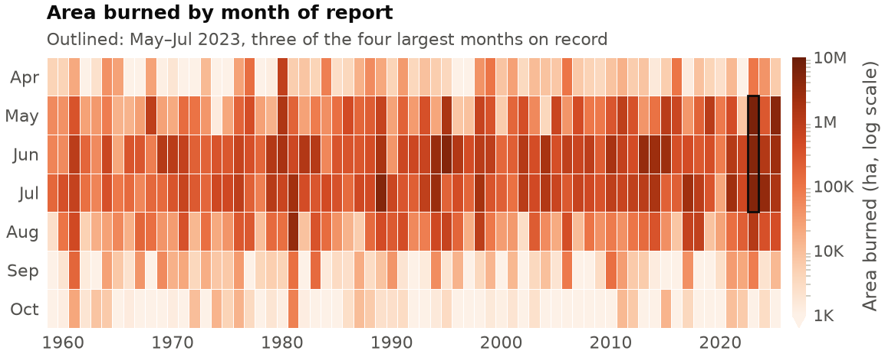
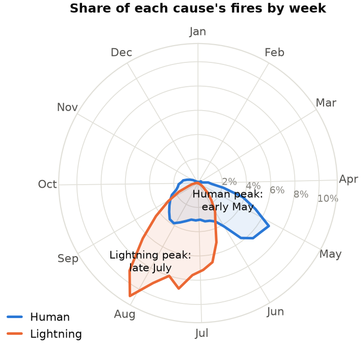
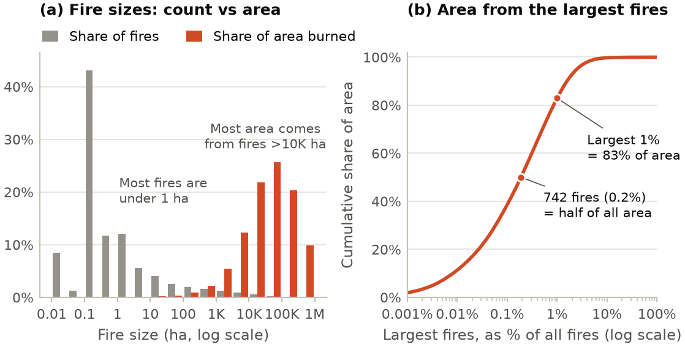

2023 stands far above the rest
Is the area burned each year increasing, and how unusual was 2023?

Interactive version: hover for exact values, or drag the slider below the chart to zoom into a period.

Interactive version: hover over any cell for the exact hectares burned that month.
Lightning burns the most, people start it earlier
How do lightning-caused and human-caused fires differ in where they happen and when?


A few huge fires do most of the damage, and they are getting bigger
Do a small number of very large fires account for most of the burned area, and has typical fire size changed?


The boreal belt burns most, and British Columbia is joining it
Where are Canada's main wildfire hotspots, and have they shifted over time?

Interactive version: hover over a province for its name and burn rate.

Interactive version: choose a decade at the top right, then zoom, pan and hover over a burn area.
The same story, two more ways
Where does the area burn, and what starts the fires that burn it?
Interactive: hover over a rectangle for the exact area, or click a province to zoom in.
Interactive: click a slice to zoom into it, and click the centre to go back.
About the data
The data comes from the Canadian National Fire Database (Canadian Forest Service, Natural Resources Canada), released under the Open Government Licence – Canada. After cleaning, it holds 432,595 fires from 1959 to 2025.
We removed duplicates, records with unknown years, prescribed burns, re-burns, and mutual-aid responses between Alberta and Saskatchewan. Trends over time use only fires of 200 ha or more, because small fires were under-reported before the 1970s. Large fires are 4.8% of all fires but 98.9% of the area burned.